# Setup Instructions for Web 1
## Create a Github account
You'll need a github account to store your files for this class.
1. Go to [https://github.com](https://github.com) and sign up. If you already have a gitHub account, skip this step and sign in instead.
- Finish the sign up process (choose a free plan, take the survey)
<a class="lightbox" href="helper-scripts/instructions-images/1-github.png"></a>
<a class="lightbox" href="helper-scripts/instructions-images/2-plan-type.png">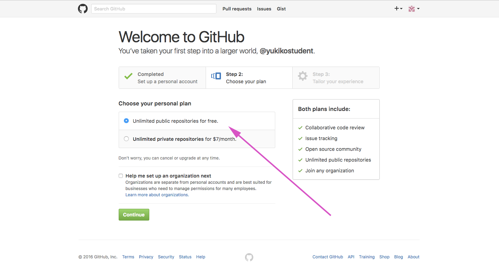</a>
<a class="lightbox" href="helper-scripts/instructions-images/3-empty-home.png">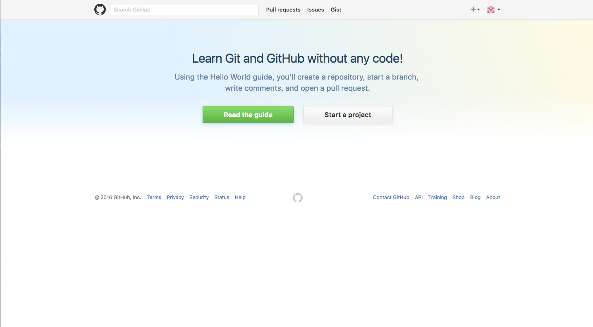</a>
1. Fork Yukiko's Web 1 Folder
- Go to [https://github.com/yukikodesign/web1](https://github.com/yukikodesign/web1)
- Click the `Fork` button in the top right (you may need to verify your email address first)
<a class="lightbox" href="helper-scripts/instructions-images/4-fork.png" title="Click fork button">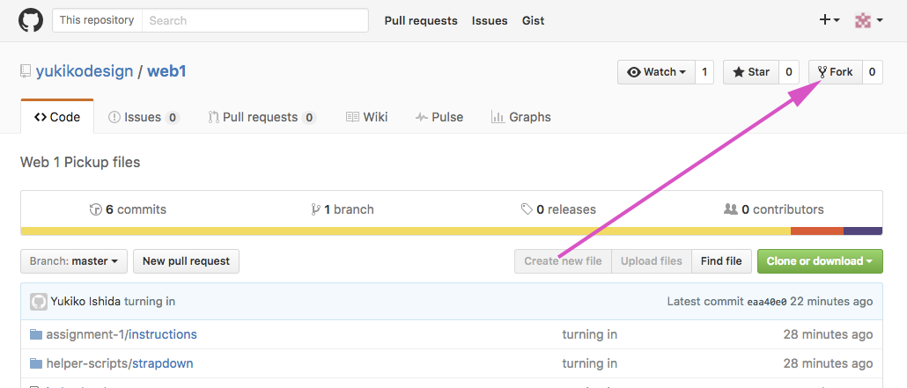</a>
<a class="lightbox" href="helper-scripts/instructions-images/8-forked.png" title="Your Fork of my web 1 repo code">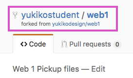</a>
1. Change the settings to display site
- Click the `Settings` tab
- Scroll down to the `GitHub Pages` Section
- Change the `Source` dropdown from `none` to `master branch`
- Hit the save button to confirm
- You can visit your github pages site using the link shown `https://{username}.github.io/web1` Save this link for later.
<a class="lightbox" href="helper-scripts/instructions-images/9-settings-tab.png" title="locate the GitHub Pages section in Settings">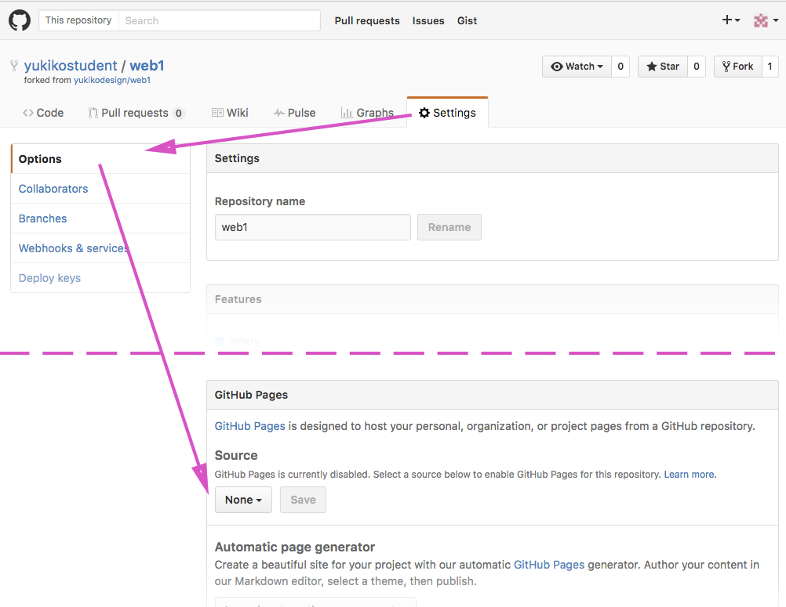</a>
<a class="lightbox" href="helper-scripts/instructions-images/11-dropdown.png" title="Change the Source to Master. Visit pages link.">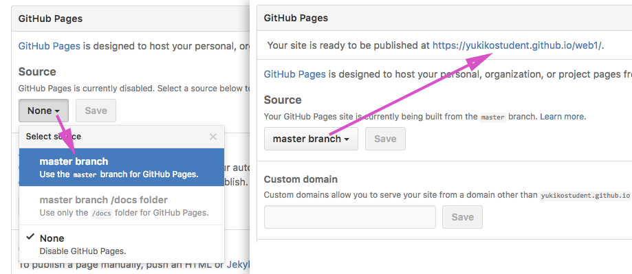</a>
<a class="lightbox" href="helper-scripts/instructions-images/13-site.png" title="Visit your GitHub pages link">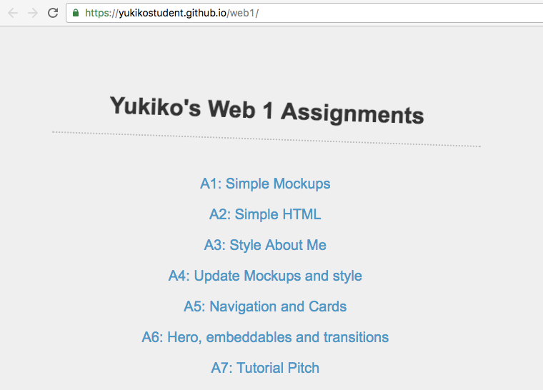</a>
-----
## Setup Cloud 9 for editing
We'll use cloud 9 as a code editor for the class. It is a good way to manage files between gitHub and the various lab computers.
1. Go to [https://c9.io/](https://c9.io/) and click the github octocat icon
- authorize application to access your github account
- finish signup process (you will need to check your email to create a password and enter a credit card- though won't charge)
<a class="lightbox" href="helper-scripts/instructions-images/14-cloud9.png" title="Login with your GitHub account">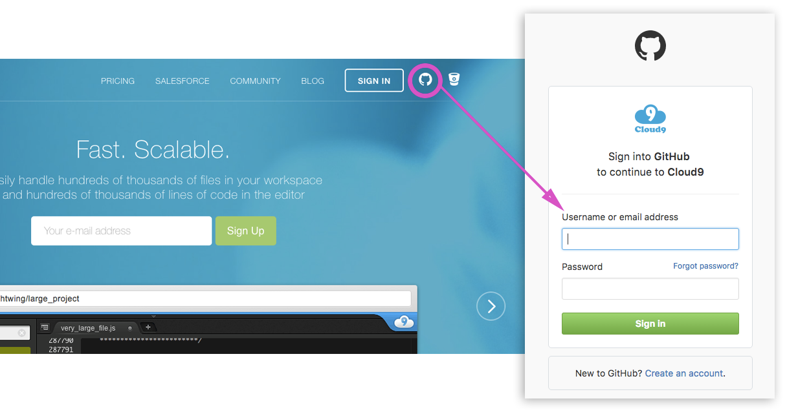</a>
<a class="lightbox" href="helper-scripts/instructions-images/16-authorize-github.png" title="Authorize Cloud9 to access your GitHub account">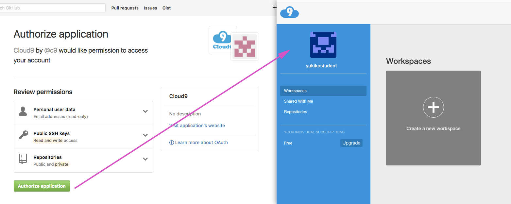</a>
1. Create a new workspace by cloning
- Click on the `repositories` tab
- Find the web1 github repo and click on the `clone to edit` button next
- Give your workspace a name, description, and click the `create workspace` button
<a class="lightbox" href="helper-scripts/instructions-images/19-clone.png" title="Clone to edit">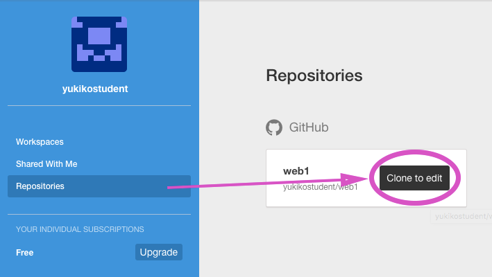</a>
<a class="lightbox" href="helper-scripts/instructions-images/20
-workspace-name.png" title="Name and create your workspace">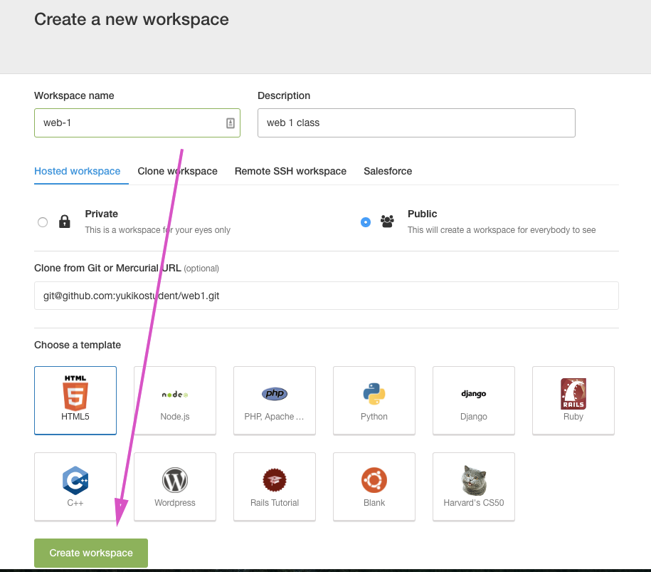</a>
## Edit and turn in
Your cloud 9 workspace is your area to edit code. Let's make a change to your homepage and turn it in!
1. Preview your file
- find the `index.html` file in the left workspace file list, double click it to open the file
- Click the `preview` button, and select `live preview file` to see the the current page as you make changes
<a class="lightbox" href="helper-scripts/instructions-images/21-live-preview.png" title="Open index.html and click the preview > live preview file menu">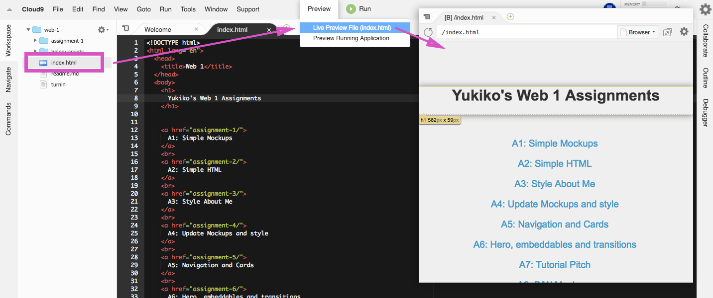</a>
1. Change the name on the Home page
- On line 8, change the name to your name
- Save the file using the keyboard command, `command + s`
<a class="lightbox" href="helper-scripts/instructions-images/22-change-name.png" title="Change the name and save">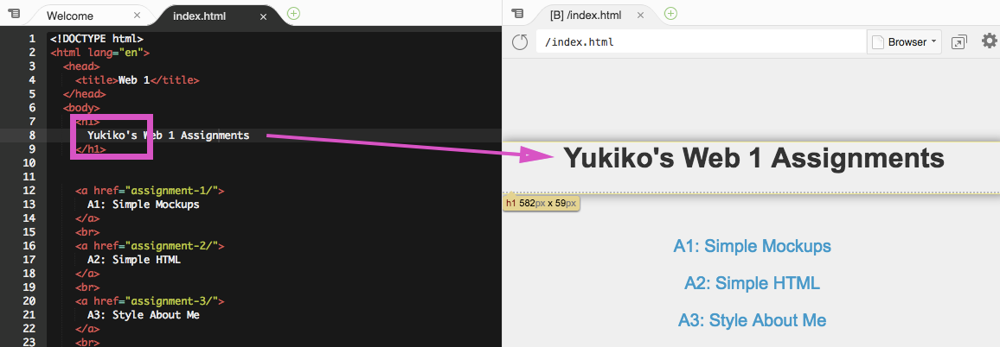</a>
1. Turn in your change to GitHub
- Open a new terminal panel using the menu, `Window > new terminal`
- Type in this command to turn in your files to GitHub: `./turnin` and hit `enter` to submit your command.
- Be sure the message reads "Successfully Turned in!"
<a class="lightbox" href="helper-scripts/instructions-images/23-terminal.png" title="Run the turn-in script in the terminal.">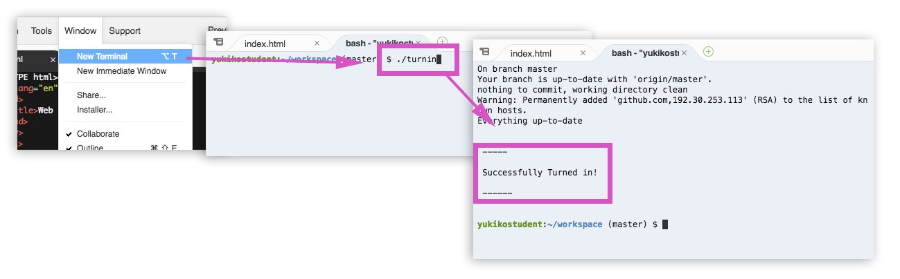</a>
1. Check out your changes on your GitHub pages link `https://{username}.github.io/web1/`
<a class="lightbox" href="helper-scripts/instructions-images/26-preview.png" title="View your turned in changes on github">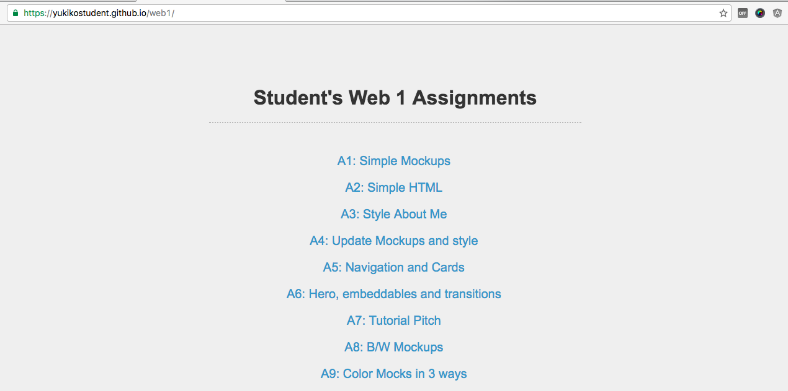</a>
## Congrats!
From here on out, just log into Cloud 9 to edit your code. Run the turn in script to update your github pages that's viewable to the class.